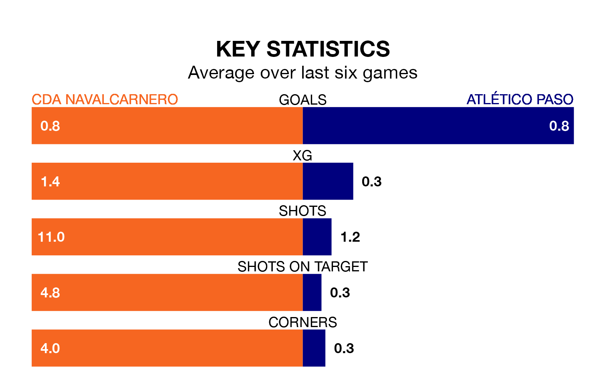

Atlético Paso travel to the Estadio Municipal Mariano González for Sunday's early match against CDA Navalcarnero looking to bounce back from defeat last time out in the Segunda División RFEF Group 5.
Atlético Paso, who sit third in the league after 21 games, fell to a 1-0 home defeat to CD Numancia on February 4.
They face a CDA Navalcarnero side who picked up a win in their last match, a 1-0 victory against Llerenense, and who sit 15th in the table.
With 16 goals in 21 games so far this season, Atlético Paso are the league's joint-second-lowest scorers with 0.8 goals per game. But they are conceding fewer than average too, letting in nine goals at a rate of 0.4 per game.
CDA Navalcarnero are also below average scorers, with 1.0 goal per game, compared to a league average of 1.1. They have conceded 1.2 goals per game.
In the last three years, CDA Navalcarnero and Atlético Paso have played each other on three occasions. They won one each, and they drew once.
Their last meeting was on October 1, when they played out a 0-0 draw.
The home team are in mixed form in the Segunda División RFEF Group 5, with two wins and two draws from their last six games.
With three wins and a draw over that period, the visitors' form is slightly better – they have taken 10 points from 18, compared to CDA Navalcarnero's eight.
Updated: 10:28 (UTC), 06/02/24